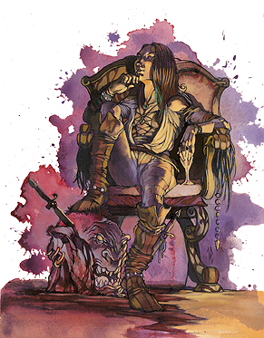

“飞虫领主，谎言大君，拜尔泽布陛下！那狡诈的诡计，那黑暗的力量！您是我灵魂的归宿！”
－骗子伊苏拉珂罕

拜尔泽布的信徒都是骗子，欺诈犯或是盗贼。她们更有可能趁着一名圣武士熟睡的时候袭击而不是在战场上面对面作战。她们靠阴谋诡计生活，为了达到目的不惜背叛自己的朋友和家人。她们招牌就是花言巧语和准确的背刺，而第七领主赐予她们的力量甚至还包括了魔鬼和飞虫。
游荡者，刺客，吟游诗人以及巡林客都可能进阶拜尔泽布的信徒，邪恶的牧师有时也会发现这是个不错的选择。
拜尔泽布的信徒很少有盟友，他们惯于榨干别人的价值后再一脚踢开。
生命骰：d6
需求：想要成为一名拜尔泽布的信徒，角色必须满足以下条件：
阵营：任意邪恶
技能：唬骗10级，交涉4级，收集情报4级
专长：黑暗信徒
特殊：想要正式成为一名拜尔泽布的信徒，角色必须进行一种可怕的仪式，包括在活活杀死一名智慧生物。祭礼必须在被害者家中进行。
本职技能：估价（感知），平衡（敏捷），攀爬（力量），解读文书（智力），交涉（魅力），解除装置（智力），易容（魅力），逃脱（敏捷），收集情报（魅力），躲藏（敏捷），威吓（魅力），暗语沟通（感知），跳跃（力量），知识（宗教）（智力），聆听（感知），潜行（敏捷），开锁（敏捷），扒窃（敏捷），专业（感知），骑乘（敏捷），搜索（智力），观言察色（感知），侦察（感知），使用魔法装置（智力）
每等级技能点数：6+智力调整值
表5-5 拜尔泽布的信徒
等级 基础攻击加值 坚韧豁免 反射豁免 意志豁免 特殊
1 +1 +0 +2 +2 魔鬼巧舌
2 +2 +0 +3 +3 偷袭+1d6
3 +3 +1 +3 +3 暗示
4 +3 +1 +4 +4 召唤奥赛魔
5 +4 +1 +4 +4 偷袭+2d6
6 +5 +2 +5 +5 疫病虫群
7 +6 +2 +5 +5 巧舌如簧
8 +6 +2 +6 +6 偷袭+3d6
9 +7 +3 +6 +6 召唤恐纳魔
10 +8 +3 +7 +7 谎言之王
职业特性：
擅长武器及防具：拜尔泽布的信徒擅长所有简单武器，军用武器以及轻型盔甲，但不擅长盾牌。
魔鬼巧舌：拜尔泽布的信徒雄于辩论，滔滔不绝，靠着自己狡诈的智力甚至能让人相信最离谱的谎言。当角色进行唬骗检定时，将智力调整值叠加在魅力调整值上。
偷袭（Sneak Attack）：拜尔泽布2级的信徒能抓住机会，趁目标无法有效防卫时攻击其弱点，造成额外伤害值。基本上，只要目标失去AC的敏捷加值（无论到底有没有敏捷加值），便可造成额外伤害，额外伤害值为1d6点，之后拜尔泽布的信徒每升三级再加1d6（5级+2d6，8级+3d6）。偷袭造成的额外伤害不计入重击的伤害倍数。
远程攻击时，目标必须位于30�漳冢�才视为偷袭。因为若超过此距离，便很难瞄准。
拜尔泽布的信徒使用闷棍（覆皮短棍）或徒手击打进行偷袭时，可选择造成淤伤而非一般伤害。但使用一般武器偷袭不能造成淤伤（连-4减值的一般方法都不能用），因为偷袭时拜尔泽布的信徒必须发挥武器的最大效用。构装生物、泥形怪物、植物、不死生物、虚体生物，以及不受重击的生物都不会被拜尔泽布的信徒偷袭。拜尔泽布的信徒必须能清楚看见目标，辨识要害位置，并且可以击中要害，所以他无法偷袭隐蔽的生物，也无法偷袭碰不到要害的目标。
拜尔泽布的信徒自其它职业（如游荡者等级）获得的偷袭加值可与信徒本身的伤害加值累加。
暗示（SP）：每日一次，拜尔泽布3级以上的信徒可以施展如同法术“暗示术”的效果，DC等于10+拜尔泽布信徒等级+角色魅力调整值。
召唤奥赛魔（SP）：每日一次，拜尔泽布4级以上的信徒可以召唤1名奥赛魔，效果如同一名15级施法者施展“怪物召唤术”。
疫病虫群（SP）：每日一次，拜尔泽布6级以上的信徒可以施展如同法术“疫病虫群”的效果，施法者等级15，召唤来的总是飞虫。
巧舌如簧（SP）：每日一次，拜尔泽布7级以上的信徒可以施展如同法术“群体媚惑”（Mass Charm）的效果，意志检定DC等于10+拜尔泽布信徒等级+角色魅力调整值。
召唤恐纳魔（SP）：每日一次，拜尔泽布9级以上的信徒可以召唤1名恐纳魔，效果如同一名15级施法者施展“怪物召唤术”。
谎言之王（EX）：拜尔泽布10级的信徒在魅力上获得+4的奖励。